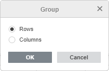
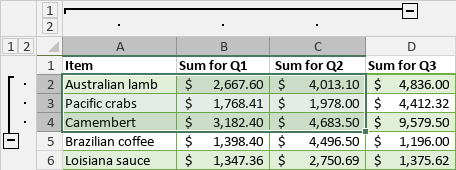
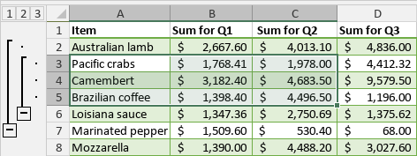
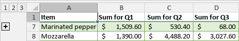
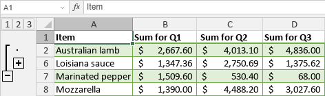
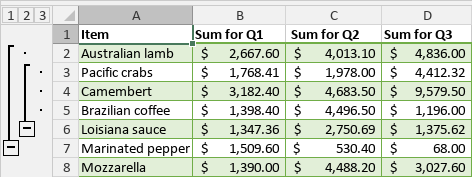

Grupisanje podataka
Mogućnost grupisanja redova i kolona, kao i kreiranja strukture (outline), omogućava vam da lakše radite sa tabelom koja sadrži veliku količinu podataka. U Uređivaču tabela možete skupljati ili proširivati grupisane redove i kolone kako biste prikazali samo potrebne podatke. Takođe je moguće kreirati višeslojnu strukturu grupisanih redova/kolona. Po potrebi možete razgrupisati prethodno grupisane redove ili kolone.
Grupisanje redova i kolona
Da biste grupisali redove ili kolone:
- Izaberite opseg ćelija koji želite da grupišete.
- Pređite na karticu Podaci i koristite jednu od odgovarajućih opcija na gornjoj traci sa alatkama:
- kliknite na dugme Grupiši, zatim izaberite opciju Redovi ili Kolone u prozoru Grupiši koji se pojavi i kliknite na OK,

- kliknite na strelicu nadole ispod dugmeta Grupiši i izaberite opciju Grupiši redove iz menija,
- kliknite na strelicu nadole ispod dugmeta Grupiši i izaberite opciju Grupiši kolone iz menija.
- kliknite na dugme Grupiši, zatim izaberite opciju Redovi ili Kolone u prozoru Grupiši koji se pojavi i kliknite na OK,
Izabrani redovi ili kolone biće grupisani, a kreirana struktura (outline) biće prikazana sa leve strane redova i/ili iznad kolona.

Da biste sakrili grupisane redove/kolone, kliknite na ikonu Sažmi. Da biste prikazali sažene redove/kolone, kliknite na ikonu Proširi.
Promena strukture (outline)
Da biste promenili strukturu grupisanih redova ili kolona, možete koristiti opcije iz padajućeg menija Grupiši. Opcije Redovi sažetka ispod detalja i Kolone sažetka desno od detalja su podrazumevano označene. One omogućavaju promenu položaja dugmadi Sažmi i Proširi :
- Opozovite izbor opcije Redovi sažetka ispod detalja ako želite da se redovi sažetka prikazuju iznad detalja.
- Opozovite izbor opcije Kolone sažetka desno od detalja ako želite da se kolone sažetka prikazuju levo od detalja.
Kreiranje višeslojnih grupa
Da biste kreirali višeslojnu strukturu, izaberite opseg ćelija unutar prethodno kreirane grupe redova/kolona i grupišite novi opseg na način opisan iznad. Nakon toga možete sakrivati i prikazivati grupe po nivoima koristeći ikone sa brojevima nivoa: .
Na primer, ako kreirate ugnježdenu grupu unutar nadređene grupe, biće dostupna tri nivoa. Moguće je kreirati do 8 nivoa.

- Kliknite na ikonu prvog nivoa da biste prešli na nivo koji skriva sve grupisane podatke:

- Kliknite na ikonu drugog nivoa da biste prešli na nivo koji prikazuje detalje nadređene grupe, ali skriva podatke ugnježdene grupe:

- Kliknite na ikonu trećeg nivoa da biste prešli na nivo koji prikazuje sve detalje:

Takođe je moguće koristiti ikone Sažmi i Proširi unutar strukture (outline) da biste prikazali ili sakrili podatke koji odgovaraju određenom nivou.
Razgrupisanje prethodno grupisanih redova i kolona
Da biste razgrupisali prethodno grupisane redove ili kolone:
- Izaberite opseg grupisanih ćelija koji želite da razgrupišete.
-
Pređite na karticu Podaci i koristite jednu od potrebnih opcija na gornjoj traci sa alatkama:
- kliknite na dugme Razgrupiši, zatim izaberite opciju Redovi ili Kolone u prozoru Grupiši koji se pojavi i kliknite na OK,
- kliknite na strelicu nadole ispod dugmeta Razgrupiši, zatim izaberite opciju Razgrupiši redove iz menija da biste razgrupisali redove i obrisali strukturu redova,
- kliknite na strelicu nadole ispod dugmeta Razgrupiši i izaberite opciju Razgrupiši kolone iz menija da biste razgrupisali kolone i obrisali strukturu kolona,
- kliknite na strelicu nadole ispod dugmeta Razgrupiši i izaberite opciju Obriši strukturu iz menija da biste obrisali strukturu redova i kolona bez uklanjanja postojećih grupa.